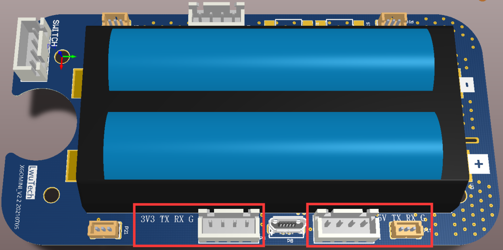
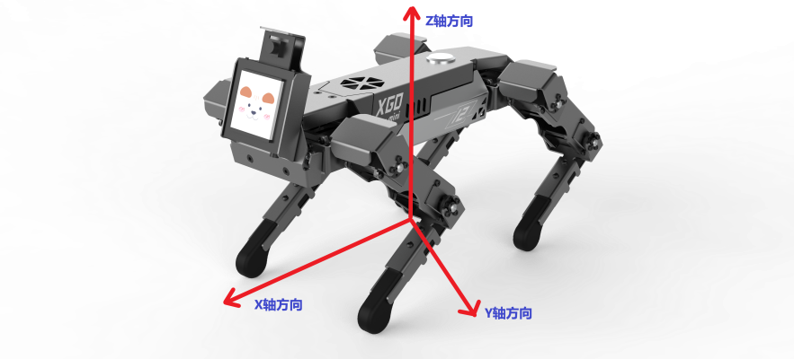
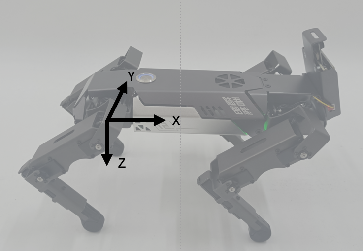

文档目的和对象
本文档适用于任意上位机与XGO系列机器狗驱动板之间命令/数据交互的通信协议。示用于高阶开发者对XGO进行二次开发。
修订记录
2022.3.10 创建文档
硬件连接
用六角扳手到拧下背部两颗螺丝，左右两侧螺丝，尾部两颗螺丝后，拆除机器狗后背板，拔掉开关线。
如下图所示，主板一侧有两个串口通信接口，按主板丝印线序和上位机线序对接(TX接RX、RX接TX)，然后就可以调试了。两个端子对外供电电压分别是5V和3.3V，不可同时使用。
默认情况下3.3V端子被AI模块占用，如果想用其他设备进行串口控制，请将AI模组与主板的连接线拔下。 
软件接口
采用标准TTL串行通讯。
| 波特率 | 115200 |
|---|---|
| 数据位 | 8 |
| 停止位 | 1 |
| 奇偶校验位 | 无 |
数据帧格式
数据帧采用固定格式：帧头+帧长度+数据+校验和+帧尾。
| 帧头 | 固定为0x55 0x00 |
|---|---|
| 帧长度 | 整个数据帧的字节数 |
| 数据 | 依据指令类型有不同含义，见第二部分 |
| 校验和 | 长度和数据的所有字节相加，取最低字节，然后取反 |
| 帧尾 | 固定为0x00 0xAA |
指令
写指令，无应答（0x00）
| 帧头 | 帧长度 | 指令类型 | 首地址 | 数据 | 校验和 | 帧尾 |
|---|---|---|---|---|---|---|
| 0x55 0x00 | 0x00 | data | 0x00 0xAA |
写指令会连续修改从首地址开始的数据，不会产生应答。
>例如修改机器狗的前进速度，前进速度地址为0x30，使其以最大速度前进，即速度内容为0xFF，具体指令如下：
>0x55 0x00 0x09 0x00 0x30 0xFF 0xC7 0x00 0xAA
>其中校验和计算过程如下:
>0x09+0x00+0x30+0xFF=0x138，取最低字节0x38，取反得0xC7
读指令，有应答（0x02）
| 帧头 | 帧长度 | 指令类型 | 首地址 | 读取长度 | 校验和 | 帧尾 |
|---|---|---|---|---|---|---|
| 0x55 0x00 | 0x02 | uint_8 | 0x00 0xAA |
写指令会连续读取从首地址开始的数据，不会产生应答。
返回数据包的格式为:
| 帧头 | 帧长度 | 指令类型 | 首地址 | 数据 | 校验和 | 帧尾 |
|---|---|---|---|---|---|---|
| 0x55 0x00 | 0x12 | data | 0x00 0xAA |
>例如读取12个舵机的角度,0x50为第一个舵机位置的地址,0x0C意思为连续读取12个,具体指令如下：
>0x55 0x00 0x09 0x02 0x50 0x0C 0x98 0x00 0xAA
>其中校验和计算过程如下:
>0x09+0x02+0x50+0x0C=0x67，取反得0x98 >读取返回数据包:
>0x55 0x00 0x14 0x12 0x50 0x80 0x80 0x80 0x80 0x80 0x80 0x80 0x80 0x80 0x80 0x80 0x80 0x89 0x00 0xAA ## 机器狗坐标系定义 ### 整机坐标系 在初始站姿情况下，原点位于机身正下方，机器狗前进方向为X轴正向，左为Y轴正向，上为Z轴正向。

单腿坐标系
单腿坐标系用于描述足端的位置，四条腿对应四个独立的单腿坐标系，大腿关节为原点，机器狗前进方向为x轴正向，左为Y轴正向，下为Z轴正向。

机器狗内存表
| 地址 | 功能 | 读写 | 初始值 | 备注 | 模式 |
|---|---|---|---|---|---|
| 0x00 | 工作状态 | 读 | 0x00 | 状态信息 | |
| 0x01 | 电池电量 | 读 | 0xff | 范围为0-100，线性对应电量最低值-最高值 | |
| 0x02 | XGO版本 | 读 | 0x00 MINI | 0x01 Lite | |
| 0x03 | 表演模式 | 写 | 0x00 | 0x00正常控制模式 | 0x01循环做动作 |
| 0x04 | 标定模式 | 写 | 0x00 | 0x01进入标定模式 0x00退出标定模式完成标定 | |
| 0x13 | 蓝牙名称 | 写 | XGOMINI | 可命名长度为10个字节，不能为中文，命名后蓝牙名称为XGO_xxxxxx | |
| 0x20 | 卸载舵机 | 读写 | 0x00 | 0x00舵机处于正常工作状态，0x01卸载所有舵机，0x11-0x14依次卸载1-4号腿，0x21-0x24依次恢复1-4号腿 | 调试模式 |
| 0x21 | 重置舵机零位 | 写 | 0x00 | 0x00舵机处于正常工作状态0x01所有舵机记录当前位置为零位 该寄存器设定为0x01后，会自动跳变为0x00 | |
| 0x30 | 前后移动速度 | 读写 | 0x80 | 范围为0x00-0xff，线性对应反向最大值-正向最大值，正方向按机器人坐标系，下同（注③） | 整机模式 |
| 0x31 | 左右移动速度 | 读写 | 0x80 | ||
| 0x32 | 顺逆时针旋转速度 | 读写 | 0x80 | 方向遵循右手原则 | |
| 0x33 | 身体沿x方向平移距离 | 读写 | 0x80 | 足端与地面接触点不变而身体扭动，下同 | |
| 0x34 | 身体沿y方向平移距离 | 读写 | 0x80 | ||
| 0x35 | 身体高度 | 读写 | 0x80 | ||
| 0x36 | 身体绕x轴旋转角度 | 读写 | 0x80 | 方向遵循右手原则 | |
| 0x37 | 身体绕y轴旋转角度 | 读写 | 0x80 | ||
| 0x38 | 身体绕z轴旋转角度 | 读写 | 0x80 | ||
| 0x39 | 以一定周期绕x轴旋转身体 | 读写 | 0x00 | 0x00停止，0x01-0xff线性对应最小-最大旋转速度 ，该功能与直接设置位置寄存器不能同时起作用，下同 | |
| 0x3A | 以一定周期绕y轴旋转身体 | 读写 | 0x00 | ||
| 0x3B | 以一定周期绕z轴旋转身体 | 读写 | 0x00 | ||
| 0x3C | 原地踏步 | 读写 | 0x00 | 0x00停止，0x01-0xff线性对应最小-最大踏步高度 | |
| 0x3D | 运动模式 | 读写 | 0x00 | 0x00常速运动0x01慢速运动0x02高速运动 | |
| 0x3E | 动作指令 | 写 | 0x00 | 详情见动作指令表 0为默认站姿 1-N为各个动作(见右侧) | |
| 0x80 | 以一定周期沿X轴方向平移运动 | 读写 | 0x00 | 0x00停止，0x01-0xff对应最小-最大旋转速度，移动幅度为位置限幅的一半 | |
| 0x81 | 以一定周期沿Y轴方向平移运动 | 读写 | 0x00 | ||
| 0x82 | 以一定周期沿Z轴方向平移运动 | 读写 | 0x00 | ||
| 0x40 | 左前腿x方向足端位置 | 读写 | 0x80 | 范围为0x00-0xff，线性对应反向最大值-正向最大值，正方向按机器人坐标系，下同 | 单腿模式 |
| 0x41 | 左前腿y方向足端位置 | 读写 | 0x80 | ||
| 0x42 | 左前腿z方向足端位置 | 读写 | 0x80 | ||
| 0x43 | 右前腿x方向足端位置 | 读写 | 0x80 | ||
| 0x44 | 右前腿y方向足端位置 | 读写 | 0x80 | ||
| 0x45 | 右前腿z方向足端位置 | 读写 | 0x80 | ||
| 0x46 | 右后腿x方向足端位置 | 读写 | 0x80 | ||
| 0x47 | 右后腿y方向足端位置 | 读写 | 0x80 | ||
| 0x48 | 右后腿z方向足端位置 | 读写 | 0x80 | ||
| 0x49 | 左后腿x方向足端位置 | 读写 | 0x80 | ||
| 0x4A | 左后腿y方向足端位置 | 读写 | 0x80 | ||
| 0x4B | 左后腿z方向足端位置 | 读写 | 0x80 | ||
| 0x50 | ID为11舵机位置 | 读写 | 0x80 | 范围为0x00-0xff，线性对应反向最大值-正向最大值，下同 | 舵机模式 |
| 0x51 | ID为12舵机位置 | 读写 | 0x80 | ||
| 0x52 | ID为13舵机位置 | 读写 | 0x80 | ||
| 0x53 | ID为21舵机位置 | 读写 | 0x80 | ||
| 0x54 | ID为22舵机位置 | 读写 | 0x80 | ||
| 0x55 | ID为23舵机位置 | 读写 | 0x80 | ||
| 0x56 | ID为31舵机位置 | 读写 | 0x80 | ||
| 0x57 | ID为32舵机位置 | 读写 | 0x80 | ||
| 0x58 | ID为33舵机位置 | 读写 | 0x80 | ||
| 0x59 | ID为41舵机位置 | 读写 | 0x80 | ||
| 0x5A | ID为42舵机位置 | 读写 | 0x80 | ||
| 0x5B | ID为43舵机位置 | 读写 | 0x80 | ||
| 0x5C | 设置舵机速度 | 读写 | 0x80 | 范围为0x00-0xff，线性对应最小值-最大值（仅在该模式下有效） | |
| 0x5D | 舵机位置设置为站立姿态 | 写 | 0x00 | 0x00不起作用0x01舵机位置恢复站立时位置 该寄存器设定为0x01后，会自动跳变为0x00 | |
| 0x61 | IMU状态 | 读写 | 0x00 | 0x00关闭 0x01自稳定模式 | |
| 0x62 | ROLL角度 | 读 | 0x01 | ||
| 0x63 | PITCH角度 | 读 | 0x02 | ||
| 0x64 | YAW角度 | 读 | 0x03 |